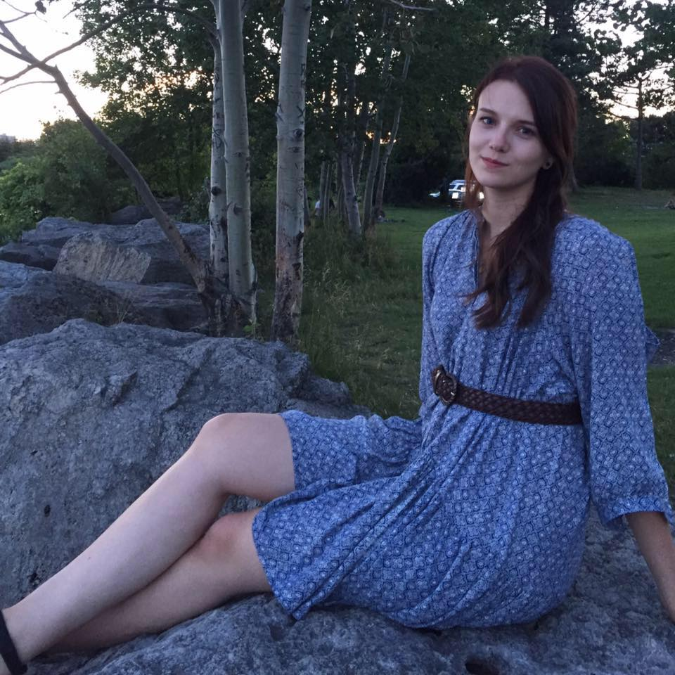

I'm from Toronto, Ontario.
I’m an graphic designer who loves to learn and develop new skills. I've worked as a graphic designer for 5 years and I am continually looking to update my skills. I’m excited to bring my design experience to learning how to code and developing beautiful web pages.
In my spare time I love to tackle DIY projects, sewing and crafts. I am also an adept photographer and enjoy landscape photography.
Programs/languages I am adept at using include
I’d like to use my design skills to create user friendly and functional web pages
My hobbies including vegan cooking, hiking in cottage country and reading books on graphic design history.